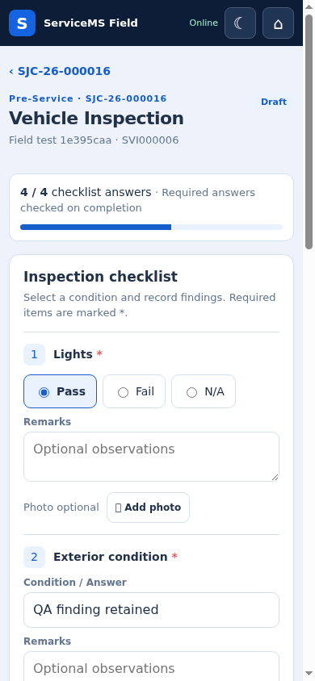
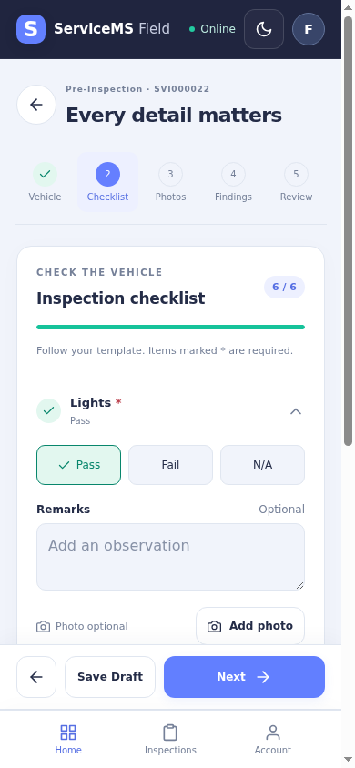
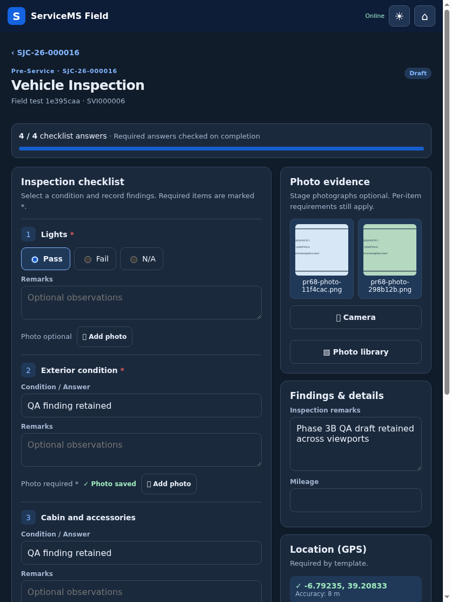
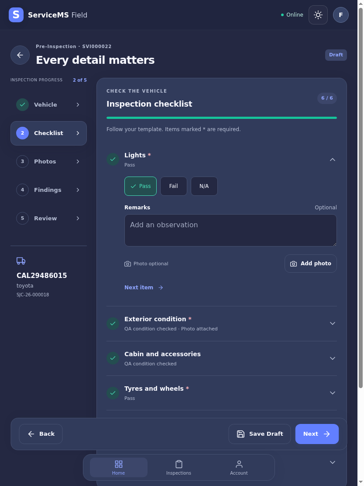

Primary visual direction: the supplied navy field-service dashboard mockup. The photographic-evidence and inspection-checklist references inform the gallery and answer controls. The implementation uses real permitted ServiceMS records and frozen template requirements.
Original mockup files are pending. The three approved images are visible in the chat, but the workspace received only the pasted requirements text. The original source files were requested. This board does not substitute an invented mockup for the originals. Select those image files below to compare them locally alongside any actual capture. No selected image is uploaded or saved by this page.
Approved reference ↔ actual PWA
Actual authenticated pilot capture

Reference visual language applied
Navy headerDark canvasDark cardsIndigo actionsEvidence / success
| Supplied reference | Actual implementation |
|---|
| Welcome dashboard, compact metrics, next work card and bottom navigation | Job Card, Draft and Completed counts; resume-next-draft card; registration/model/workshop; three functional navigation destinations. |
| Navy surfaces, blue-gray cards, indigo primary actions and green progression | Complete light/dark tokens, SVG icons, consistent card spacing, step rail on tablet and compact numbered progress on phone. |
| Numbered operational checklist and segmented condition choices | Five guided sections; compact expandable checklist items; exact configured answer values; per-item remarks and required evidence. |
| Large photographic evidence grid | Separate Camera/Photo Library actions, multiple private uploads, progress/retry, two/three-column gallery and modal original-photo review. |
| Inspection complete screen | Protected completion receipt, inspection reference, vehicle, stage, completion time, View Inspection and Return to Job Card. |
Actual before ↔ after captures
These are baseline-versus-refinement comparisons, not replacements for the approved mockups.
Before: long inspection form

After: guided checklist

Before: tablet dark form

After: tablet navigation rail

Backend rules take precedence
| Mockup feature | ServiceMS adaptation |
|---|
| To Do / Closed workflow labels | Inspection states remain Draft and Completed. Not started is only a derived stage summary, not a saved status. |
| OK / NOK choices | Configured checklist options remain unchanged; defaults are Yes / No / N/A. Answers are not remapped. |
| Photos and video, approvals, pricing and repair orders | Only supported private photo evidence and inspection findings are exposed. No video or approval/accounting workflow is invented. |
| Travel distance, maps, asset scanning and future navigation modules | Omitted. Counts come from permitted records. GPS is a configurable, manually requested capture with accuracy and timestamp. |
| Photo edit/delete affordances | Completed evidence remains protected. Changes use the existing correction workflow; inherited private evidence is retained. |
All ten captures
Photographs are explicitly labelled QA upload fixtures. Browser orientation, GPS, camera/gallery input and keyboard height were simulated. No physical Android/iOS device tests are claimed. See executed browser results and verification report.